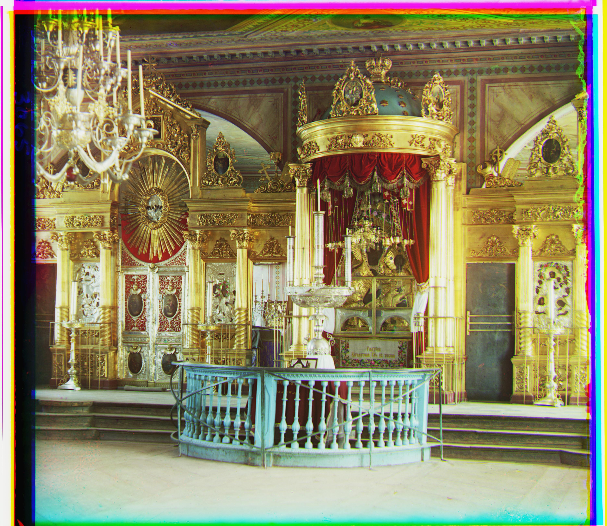
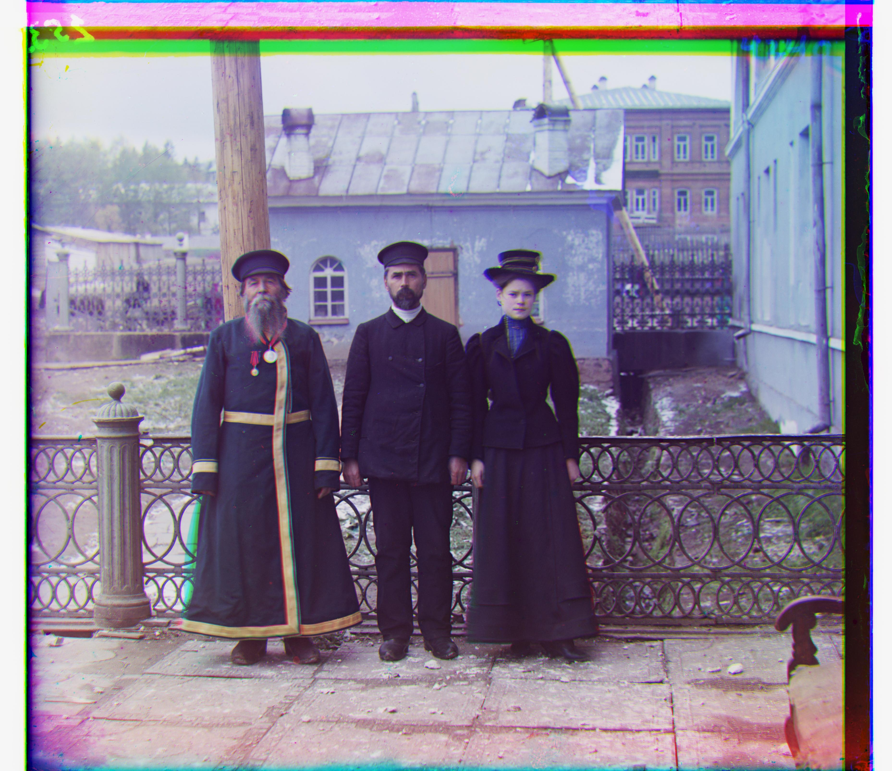
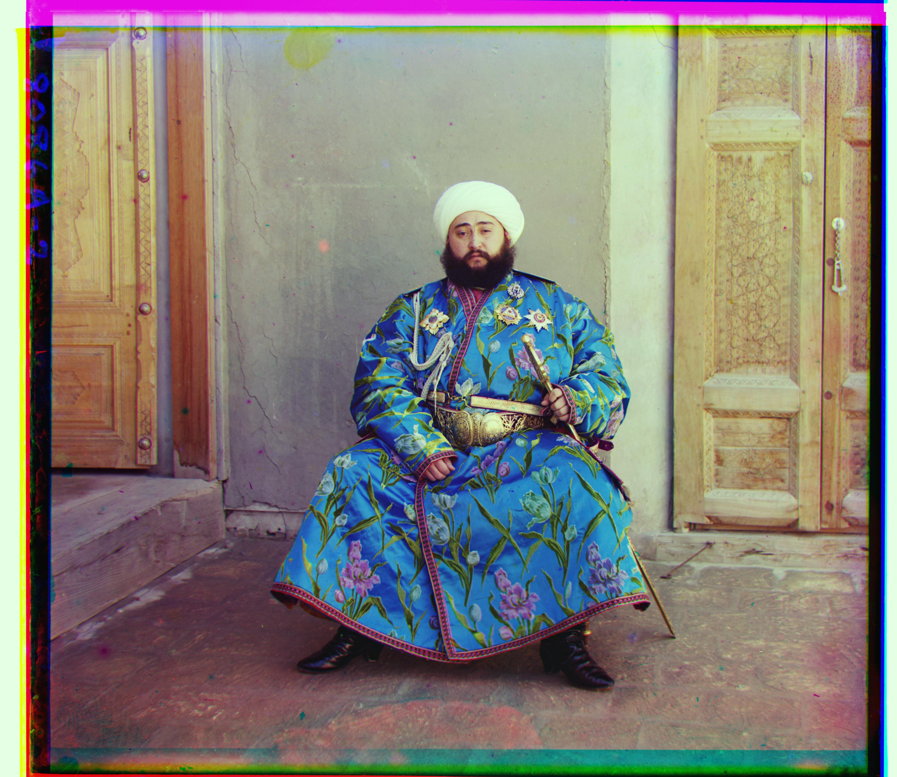

Overview
The Prokudin-Gorskii photo collection is a set of images taken with a camera that could take three grey-scale photos through three color filters (red, green, and blue). The goal of this project is to produce a color photo based on the three grey-scale photos.
Exhaustive Search
Approach
For small images, it's enough to just perform the algorithm on the full resolution. The algorithm is divided into
two parts.
The first part is to find the best displacement of the photo to stack them. Since I need to stack three grey-scale
images to create a single colorful photo, I need to make sure the three images are align to each other. Otherwise
the photos will mismatch and create a blurred photo.
The second part is merely shift the three images according to the result of the first part and stack them together
to output a color image.
Best Displacement
For the first part, I first implemented a score to compare the result with different displacements. The method I used is called Normalized Cross-Correlation (NCC), which is a dot product between two normalized vectors. Since each image is simply a matrix, I can easily calculate their norm to normalize them and then reshape the matrix to a vector. Then my search will be perform in a window of [-15, 15] shift in both the x axis and y axis. The algorithm will compare the score of each displacement and output the best shift. However, after running the algorithm, I figured out that by just using the NCC algorithm can often create wrong result that the three images cannot align well. I need to corp the borders since they would affect the NCC metric in deciding the best displacement. After corpping the images, the algorithm can just focus on the middle of the images. My algorithm corpped 15% of each side of the image. This can avoid the influence of the borders and also speedup the algorithm.

green-shift: dx 2, dy 5 red-shift: dx 3, dy 12 |

green-shift: dx 2, dy -3 red-shift: dx 2, dy 3 |

green-shift: dx 3, dy 3 red-shift: dx 3, dy 6 |
Image Pyramid Processing
However, for the larger images (e.g. 3810x3251 compare to 390x341 for small images), the exhaustive search will
take too many time running. In this case, since the resolution is much higher, I need to increase the delta when
searching for displacement (by 10 times according to the resolution increase of the new images). As a result, the
increase in calculation is exponential. Therefore, I need to use a more efficient algorithm in image processing. I
introduced the image pyramid processing to speed up the process.
This process will first downscale the images by a factor. I choosed a factor of 2. Then my algorithm will generate
a pyramid of images. My pyramid have 5 levels. Then I perform the best displacement algorithm in the first part
for the base level. After calculation, it will update the shift to the next level and then perform the best
displacement again with the updated shift. In this way, the delta needed to be calculate at each level can be
controlled as the same size as for the small images. As a result, the amount of calculation at each level will be
relatively small.

green-shift: dx 2, dy 5 red-shift: dx 3, dy 12 |

green-shift: dx 4, dy 25 red-shift: dx -4, dy 58 |
green-shift: dx 24, dy 49 red-shift: dx 41, dy 106 |

green-shift: dx 14, dy 60 red-shift: dx 11, dy 124 |

green-shift: dx 16, dy 39 red-shift: dx 23, dy 89 |

green-shift: dx 9, dy 57 red-shift: dx 13, dy 120 |

green-shift: dx 10, dy 80 red-shift: dx 14, dy 176 |

green-shift: dx 2, dy -3 red-shift: dx 2, dy 3 |

green-shift: dx 24, dy 52 red-shift: dx 35, dy 107 |

green-shift: dx -11, dy 33 red-shift: dx -27, dy 140 |

green-shift: dx 29, dy 78 red-shift: dx 37, dy 176 |

green-shift: dx 13, dy 52 red-shift: dx 11, dy 111 |

green-shift: dx 3, dy 3 red-shift: dx 3, dy 6 |

green-shift: dx 6, dy 42 red-shift: dx 32, dy 87 |
Bell & Whistels
At last, I noticed that although after restore back to color photo, some of them still have a very off color, such as the church.tif. Therefore, I implemented an automatic white balancing algorithm based on the white-patch algorithm. In this algorithm, it consider the brightest place in the image as white and balancing the color of the images based on this keystone. In my algorithm, I choose to color in 95 percentile as white. Then my algorithm will normalize the three color channel based on the color I choose.
|
|
|
|
|

|
|
|

|